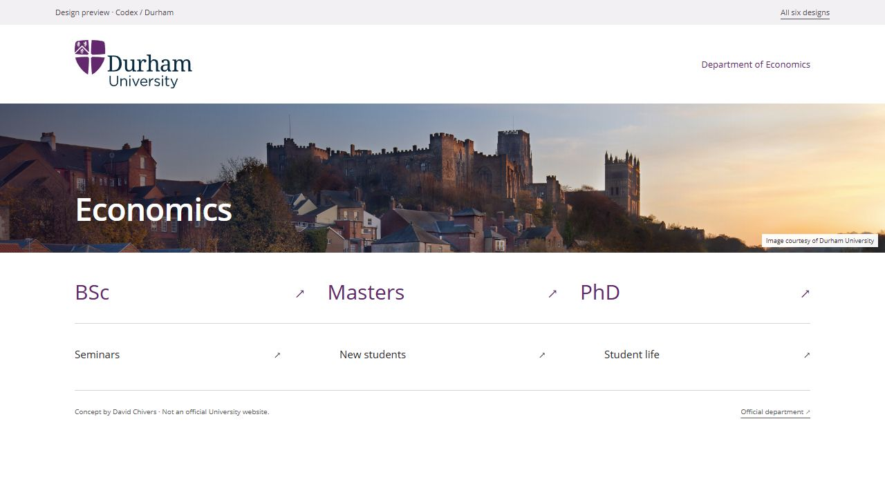
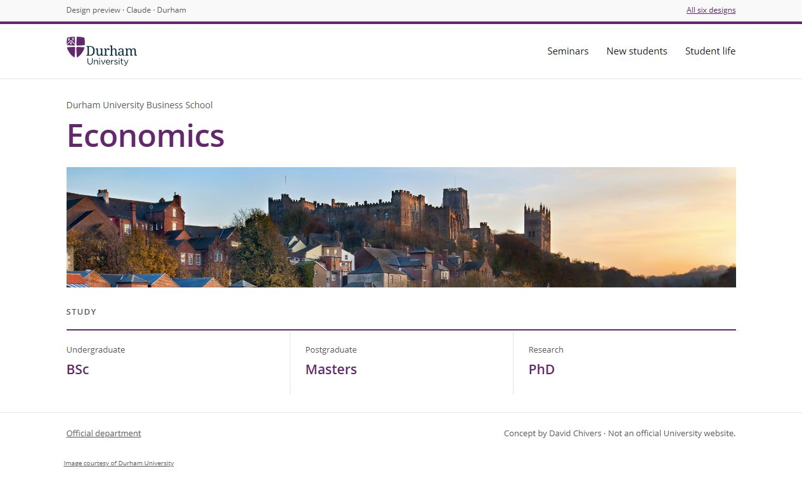
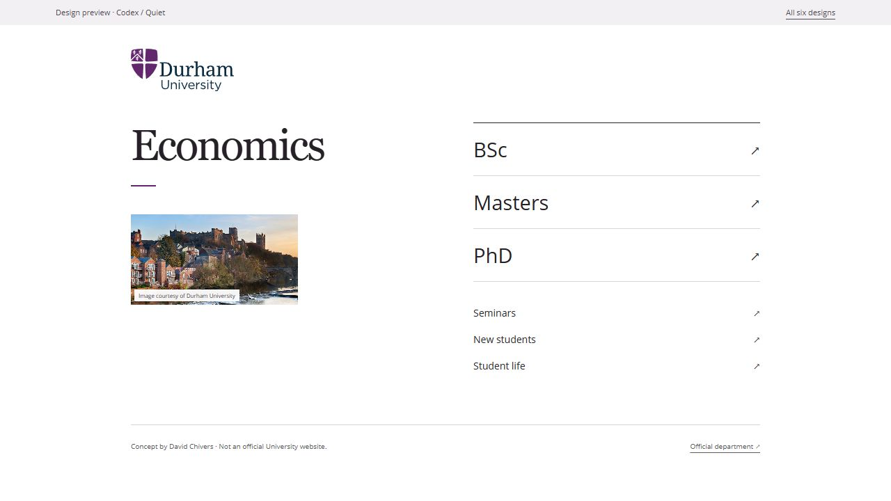
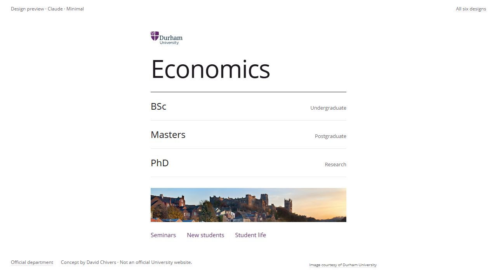
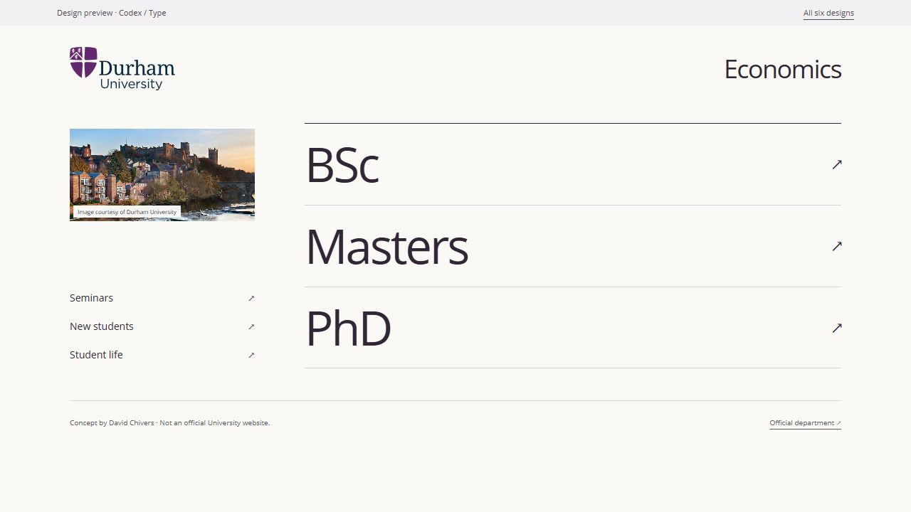
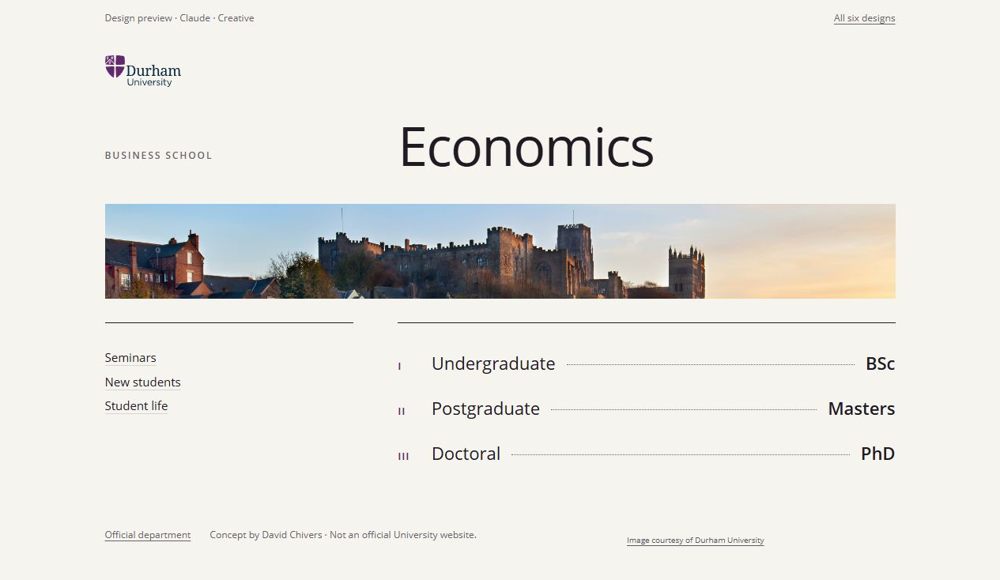

01 Durham
CodexShallow photo banner. Plum, white and six direct links.
Open design ↗Three approaches, each by Codex and Claude: Durham-style, minimal and creative. Every page links to BSc, Masters, PhD, seminars, new students and student life.

Shallow photo banner. Plum, white and six direct links.
Open design ↗
University masthead, a framed photograph and three course columns.
Open design ↗
A small photograph alongside a simple directory.
Open design ↗
One narrow column. Course links first, a thin photograph below.
Open design ↗
Larger course links with a small shift on focus or hover.
Open design ↗
An editorial contents page with a gently moving photo crop.
Open design ↗The Durham-style versions draw on the official department website. Other references included Vitsœ for restrained typography and spacing, Studio Feixen for navigation as part of the composition, and Pentagram’s New School identity for typographic character.
The photograph is the existing provisional image from Durham’s locations page. These are design previews; image and brand use still need to be confirmed for a launch. Durham’s Webspace guide links to the Image Bank. Library access does not itself establish approval for a particular use.
Student life opens the existing University student Instagram account, @thedurhamstudent. No Economics social account or live feed is implied. The seminar link opens the dedicated seminar homepage.